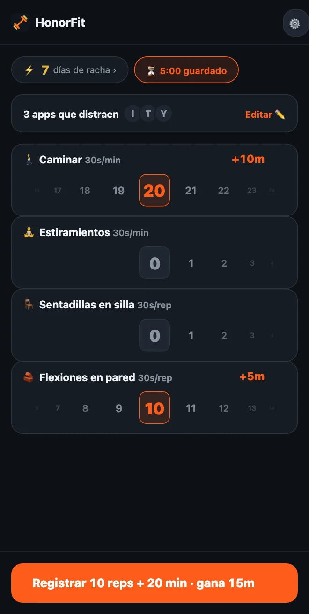

¿No puedes hacer flexiones? Ejercicios de bajo impacto para desbloquear tus apps
¡Hola a todos! A HonorFit se le conoce sobre todo como un bloqueador de apps con flexiones (en inglés): tus apps siguen bloqueadas hasta que haces unas reps y las anotas tú mismo. Pero si a tus muñecas, hombros o rodillas no les encanta, o te pasas el día en un escritorio, o ahora mismo las flexiones simplemente no van a pasar, no pasa nada.
Para mí, lo importante nunca fueron las flexiones. Lo importante es poner un pequeño obstáculo entre tú y el scroll, uno que de paso te haga bien. Una vuelta a la manzana cumple igual de bien. Aquí te cuento cómo configurar HonorFit con cosas que de verdad puedes hacer.
Empieza con los que vienen de serie
De entrada tienes cuatro ejercicios: flexiones, abdominales, dominadas y sentadillas. De esos, las sentadillas son las más suaves, y valen 30 segundos cada una.
Y como funciona con el sistema de honor, nadie revisa cómo es tu sentadilla. Si una sentadilla completa es demasiado, levantarte de una silla y volver a sentarte cuenta. Lo mismo con flexiones contra una pared o la encimera de la cocina. Tú decides qué es una rep, y solo tienes que anotarla con honestidad.
Elige los tuyos (gratis hasta 3)
Desde la versión 1.15.0 puedes renombrar y quitar ejercicios, decidir cuánto gana cada uno y añadir hasta 3 propios, todo gratis. Pro (US$3 al mes o US$19,99 en un pago único en EE. UU.; el precio varía según el país y la moneda, y la tienda te muestra el tuyo) te deja añadir todos los que quieras. Llegas desde el engranaje de la pantalla principal y luego la tarjeta Ejercicios. Escribí cada paso del editor aquí. Estas son las cosas que yo miraría.
Entrenamientos por tiempo (en minutos)
Pasa cualquier ejercicio a Minutos, o toca una de las sugerencias con ⏱. Las que encajan aquí:
- 🚶 Caminar. Mi favorita para esto. Probablemente lo más fácil que hay.
- 🧘 Yoga o 🤸 Pilates, o añade uno llamado Estiramientos si eso es más lo tuyo. (Hay más en la página del bloqueador de apps con yoga.)
- 🏊 Natación y 🚴 Ciclismo, los dos suaves con las articulaciones.
- 🪷 Meditar. No es ejercicio, pero está ahí, y diez minutos de calma son un muy buen cambio por diez minutos de TikTok.
Los entrenamientos por tiempo empiezan en 30 segundos de apps por minuto, así que una caminata de 20 minutos te da 10 minutos. La rueda cuenta minutos enteros, hasta 100 a la vez.
Movimientos para el escritorio (en reps)
Toca ＋ Añadir ejercicio y escribe un nombre. Algunos que funcionan en una oficina o en un piso pequeño, sin material:
- Sentadillas en silla: te levantas de la silla y te vuelves a sentar.
- Flexiones en pared o flexiones en el escritorio: flexiones contra una pared o un escritorio firme. Cuanto más alta la superficie, más fáciles.
- Elevaciones de talones: subes de puntillas y bajas. Puedes hacerlas mientras esperas al microondas.
- Marcha en el sitio: la sugerencia Rodillas arriba, pero más despacio. Cámbiale el nombre si quieres.
- Puente de glúteos y Kegel: silenciosos, sin material, y los Kegel los puedes hacer en una reunión sin que nadie lo sepa. Les dediqué un post entero.
Ejercicios estáticos (plancha, sentadilla en pared)
Como la rueda de minutos cuenta minutos enteros, una plancha de 20 segundos no encaja bien ahí. Yo dejaría los estáticos en Reps y decidiría qué significa una rep, por ejemplo «aguantar 20 segundos». Plancha y Sentadilla en pared están en las sugerencias.
¿Cuánto debería ganar cada uno?
Los ejercicios nuevos empiezan en 30 segundos por rep. Puedes subir o bajar de 5 en 5 segundos. Algunos puntos de partida:
| Ejercicio | Cuenta | Gana | Por ejemplo |
|---|---|---|---|
| 🚶 Caminar | Minutos | 30s por minuto | caminata de 20 minutos = 10 min |
| 🧘 Estiramientos | Minutos | 30s por minuto | 10 minutos = 5 min |
| 🪑 Sentadillas en silla | Reps | 30s por rep | 10 = 5 min |
| 🧱 Flexiones en pared | Reps | 30s por rep | 10 = 5 min |
| Elevaciones de talones | Reps | 10–15s por rep | 20 a 15s = 5 min |
| Plancha | Reps (1 rep = aguantar 20s) | 1 min por rep | 3 veces = 3 min |
Esto es solo lo que a mí me parece justo. El número correcto es el que de verdad vas a pagar en vez de hacer trampa. Si caminar es el hábito que más quieres crear, haz que valga más, por ejemplo 1 minuto por minuto.

Unas cuantas configuraciones para copiar
- Día de oficina: Sentadillas en silla, Flexiones en pared, Elevaciones de talones, Caminar.
- Suave: Caminar, Estiramientos, Sentadillas en silla, Flexiones en pared (es la captura de arriba).
- Tranqui: Caminar, Yoga, Meditar.
- Piso silencioso: Puente de glúteos, Kegel, Sentadillas en silla, Caminar.
Yo me quedaría en tres o cuatro, porque cada uno tiene su propia rueda en la pantalla principal. En la versión gratis, llegas a cuatro renombrando los de serie (Sentadillas a Sentadillas en silla, Flexiones a Flexiones en pared) y añadiendo el resto como tus 3 propios.
Y si tienes una lesión, dolor o algún problema de salud, consulta con tu médico o con un fisioterapeuta qué te conviene. Yo hago un bloqueador de apps; no soy a quien tienes que preguntarle por tus rodillas, jaja.
HonorFit Blocker es un bloqueador de apps gratis para iPhone y Android. Sistema de honor, sin cámara, nada sale de tu teléfono. Los entrenamientos por tiempo y hasta 3 ejercicios personalizados son gratis; con Pro, sin límite. No es para todo el mundo, ¡pero ojalá a alguno de ustedes le guste!